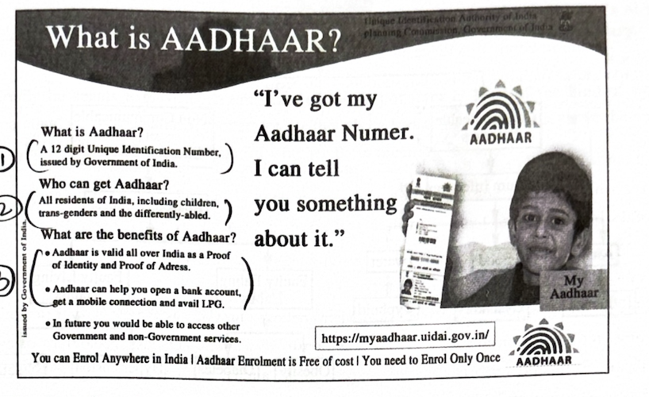
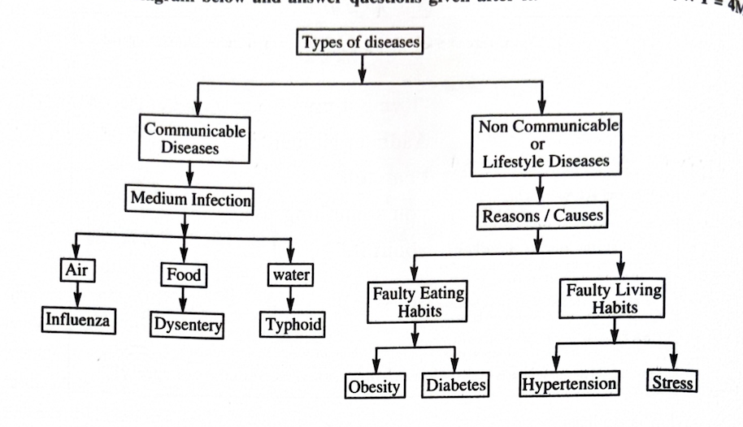
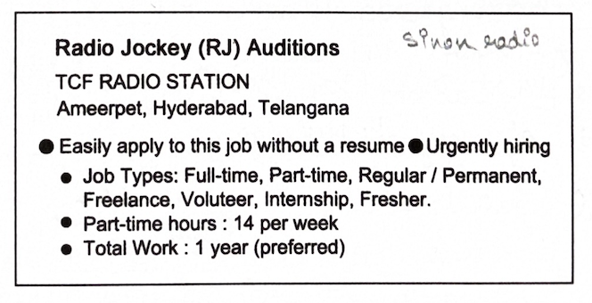

4. Read the following passage and answer ANY FOUR questions given
below.
4 × 1 = 4M
When the doctor resumed his seat, the patient asked in the faintest whisper possible, “Is that someone crying?” The doctor advised, “Don’t exert yourself. You mustn’t talk.” He felt the pulse. It was already agitated by the exertion. The patient asked, “Am I going? Don’t hide it from me.” The doctor made a deprecating noise and sat back in his chair. He had never faced a situation like this. It was not in his nature to whitewash. People attached great value to his word because of that. He stole a look at the other. The patient motioned a finger to draw him nearer and whispered, “I must know how long I am going to last. I must sign the will. It is late already. Ask my wife for the dispatch box. You must sign as a witness.”
i) Who was crying?
ii) What was the doctor’s advice to Gopal?
iii) Why was Gopal’s pulse already agitated?
iv) “Am I going?” said Gopal. What did he mean by this?
v) What was NOT there in the nature of the doctor?
vi) “… I am going to ‘last’. …” Write the part of speech of the word last.
vii) Write the synonym, from the passage, of the word hide.
viii) Write the idiom used in the passage which means “to look at somebody quickly so that nobody sees that.”
5. Read the following passage carefully and answer ANY FOUR questions
given after it in a word or in a sentence each.
4 × 1 = 4M
“A combination of science and spirituality would bring peace to the world,” said Swami Vivekananda. With full faith in this dictum, MIT World Peace University, Pune has been organising annual editions of the World Parliament of Science, Religion and Philosophy. The unification of science, religion and philosophy is for the well-being of mankind, assert the organisers. On the eve of the inauguration of the three-day 8th edition of the World Parliament on April 3, 2022, MIT WPU, along with MIT Art, Design and Technology, celebrated the public dedication programme of the world’s biggest Peace Dome (certified by the World Book of Records, London).
This Dome is regarded as a spiritually oriented scientific laboratory, showing the pathway of happiness, contentment and peace to the world. On this occasion, they distributed 1.25 lakh copies of the Shrimad Bhagavad Gita. Many believe the Gita as the “Book of Life” for entire humanity. Yet others consider it as the panacea. Prominent public persons, theologians of every major faith, philosophers, scientists, etc. participate in the annual editions of this World Parliament of Science, Religion and Philosophy.
Answer the following questions:
i) What is capable of bringing peace to the world, according to Swami Vivekananda?
ii) Name the two other activities the organisers of the World Parliament of Science, Religion and Philosophy took up on April 3, 2022.
iii) How is the world’s biggest Peace Dome regarded?
iv) How often do the organisers conduct the World Parliament of Science, Religion and Philosophy?
v) Who can participate in the World Parliament of Science, Religion and Philosophy?
vi) Write the one-word substitute used in the passage that can replace persons who study religion and beliefs.
vii) Find out the one-word substitute used in the passage to mean something that will solve all the problems of a particular situation.
viii) Theologians of every major faith … (Complete the sentence.)
```html
6. Study the advertisement given below and answer questions given
after it.
4 × 1 = 4M

i) What is Aadhaar?
ii) Who can get Aadhaar?
iii) Identify two benefits of Aadhaar.
iv) How much money is required for Aadhaar enrollment?
v) Who has issued this advertisement?
vi) What does the girl in the ad say to the reader?
vii) How many digits do we find in Aadhaar number?
viii) Aadhaar enrollment can be done anywhere in India. Write true or false.
7. Read the tree diagram below and answer questions given after it.
4 × 1 = 4M

i) What does the tree diagram describe?
ii) How many main types of diseases are shown in the diagram?
iii) Mention the reason for obesity.
iv) Name the medium of infection for typhoid.
v) Stress is caused by ______. (Fill in the blank.)
vi) The medium of infection for influenza is ______. (Fill in the blank.)
vii) Hypertension is caused by ______. (Fill in the blank.)
viii) Three broad types of diseases are mentioned in the diagram. Write true or false.
8. Rewrite the following passage/sentence using punctuation marks
wherever necessary.
8 × ½ = 4M
Originally he seems to have been uncertain of the response, or at least of the kind of work that women could do in the national movement, for though he was a passionate believer in the quality of women, he seems to have been doubtful whether the women of India...
9. Match the following words in Column-A with their meanings or
definitions in Column-B.
4 × 1 = 4M
| Column A | Column B |
|---|---|
| i) endemic | a) the perfect example of something |
| ii) den | b) the study of the origin and history of words |
| iii) edible | c) fit to be eaten as food by humans |
| iv) epitaph | d) (disease) found among a particular people |
| v) epitome | e) a short text written on a tombstone |
| vi) etymology | f) the home of lions |
10. Fill the blanks in the following sentences with suitable idiomatic
expressions given below.
Make necessary changes in the idioms if needed.
4 × 1 = 4M
a storm in a teacup, make hay while the sun shines, fight an uphill battle, donkey’s years, beat black and blue, at the eleventh hour
i) The thief was ________ by the violent crowd.
ii) I have been teaching grammar for ________.
iii) There was a ________ over who should be the Chief Guest on Hostel Day.
iv) The opposition party must ________ to win the election this time.
v) If you want to do your best, don’t do things ________.
vi) Our boss is on vacation. Let’s ________ and relax.
11. Make four meaningful sentences based on the verb patterns given
below.
An example is given as a model.
4 × 1 = 4M
| Subject | Transitive verb | Indirect Object | Direct Object | Adverbial (optional) |
|---|---|---|---|---|
| Sheela | gave | me | this book | in the USA. |
1) ____________________________
2) ____________________________
3) ____________________________
4) ____________________________
12. Fill in the blanks in the form with the details given below.
8 × ½ = 4M
You are G. Kishor, son of G. Rajender studying in Vivek Vardhini College, Khairatabad. You reside at 336/F Patancheru. You are 18 years old. Apply for a BUS PASS for the month of September.

1) ____________________________
2) ____________________________
3) ____________________________
4) ____________________________
5) ____________________________
6) ____________________________
7) ____________________________
8) ____________________________
9) ____________________________
10) ____________________________
13. Prepare a Curriculum Vitae / Resume / Bio-data in response to the
following advertisement.
1 × 4 = 4M
14. Write a letter to the Editor of a reputed newspaper about the ill
effects of media, television and movies on your generation.
OR
Write a letter to your sister explaining the importance of reading
books.
1 × 4 = 4M
15. Read the following passages and make notes. Add a suitable title.
1 × 4 = 4M
Lizzie, a medical intern, arrived at the hospital promptly at 8.00 a.m. every morning. She said, “I began at once to prepare for the dressings by spreading the different ointments, preparing lint, lotion, poultices, bandages, etc. While I am doing that at a side table, the sister is going round and examining all wounds. The simpler cases she leaves entirely to me very often, but the more difficult ones, such as cancer, she dresses while I look on.” The time took varied constantly depending on the number and nature of the cases, but she generally had time to go upstairs and visit the patients in two medical wards before joining the house surgeon, Thomas, in his eleven o’clock round. After the doctor and surgeon finished their rounds, Lizzie gave patients their medicines as prescribed. Lunch was a fortifying meal of mutton chops and ale, which Lizzie ate alone in the hospital canteen. At 1.00 p.m., she returned to the surgical ward to accompany any visiting surgeons. Lizzie arrived back at home by 4.30, where she rested for half an hour, talking to Louie and James and playing with their children. After changing her clothes into something more dainty, she did algebra till teatime at seven o’clock. To close out her day, she wrote letters to friends and family by the fire or practised Latin.
16. Mark the stress of the following words.
8 × ½ = 4M
17. Construct a dialogue between a salesman and a customer who has
been sold a defective apparel.
OR
Write a dialogue between a girl and her mother regarding the precautions
to be taken while cooking food.
1 × 4 = 4M